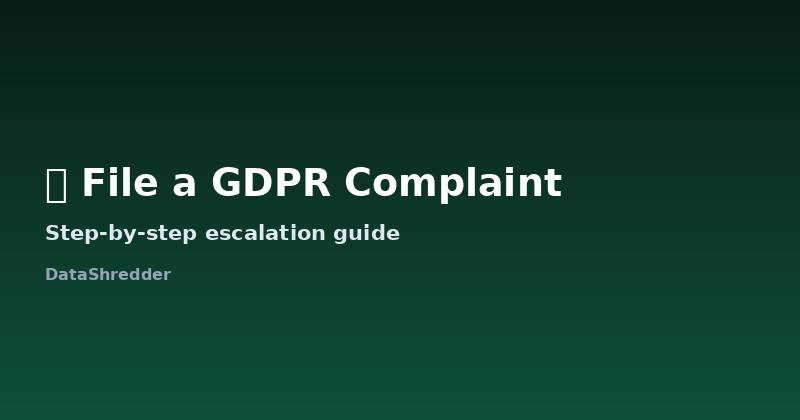

How to File a GDPR Complaint with Your Data Protection Authority
Updated August 2026 · 10 min read

When filing a complaint makes sense
A GDPR complaint isn't just for extreme cases. You can file one any time a company misses its one-month response deadline, refuses your request without a valid legal reason, or you suspect your data was processed or shared without a proper legal basis in the first place. It doesn't have to involve a data breach — an ignored deletion request is a completely normal, common reason people file, and authorities are set up to handle exactly this volume of complaint.
Finding the right authority
Your complaint goes to the Data Protection Authority (DPA) in the country where you live, or where the company has its main EU establishment — either works, and you can pick whichever is more convenient. The European Data Protection Board's member directory lists every national authority with a direct link to their complaint form.
Major national authorities and how they differ
| Authority | Country | Notes |
|---|---|---|
| CNIL | France | Fully online complaint form, generally responsive within a few weeks for acknowledgment |
| BfDI | Germany | Handles federal-level complaints; individual states also have their own regional authorities |
| ICO | United Kingdom | Handles UK GDPR (post-Brexit equivalent), separate from the EU system |
| DPC | Ireland | Handles complaints against many major US tech companies with EU headquarters in Dublin |
| AEPD | Spain | Known for a relatively fast acknowledgment process and clear online forms |
Most, like the ones above, accept complaints entirely online and don't require a lawyer or any fee to file.
What your complaint should include
- The company's full name and, if you have it, their data protection officer's contact details
- The date you sent your original request and a copy of it
- Any reply you received (or a note that none came, and by when it was due)
- What outcome you're asking for — deletion, an explanation, or both
Authorities process complaints faster when the timeline is laid out clearly rather than described in prose. A short dated list is more useful to a caseworker than a long explanation of how frustrating the experience was.
The filing process, step by step
- Find your national authority's online complaint form through the EDPB directory linked above.
- Fill in your contact details and the company's details as accurately as you can.
- Attach your original request and the company's response (or note the lack of one).
- State clearly what you want resolved — most forms have a specific field for this.
- Submit and save the confirmation number or reference ID you're given.
What happens after you file
The authority will typically acknowledge receipt within a few weeks and may contact the company directly on your behalf. Resolution timelines vary enormously — some cases close in a couple of months, others (especially against large multinational companies) take much longer as part of broader investigations. You're not required to do anything further once you've filed, though authorities sometimes follow up asking for additional detail.
Complaints involving companies in another country
If the company you're complaining about operates across multiple EU countries, GDPR has a "one-stop-shop" mechanism: your national authority coordinates with the company's lead authority (usually where its main EU establishment is) rather than requiring you to file separately in each country. You still only need to file once, with your own national authority, even if the company is headquartered somewhere else entirely.
What happens if two authorities could both handle your case
If you live in one EU country and the company's main establishment is in another, you technically have the option of filing with either. In practice, filing with your own national authority is almost always the better choice — they handle your language, they're the ones legally required to keep you updated on progress, and they'll coordinate directly with the company's "lead authority" under GDPR's cross-border cooperation mechanism if needed. You don't need to figure out jurisdiction yourself; that coordination is the regulators' job once your complaint is filed.
A simple structure that works
Authorities process a huge volume of complaints, and a short, dated, factual submission gets read faster than a long narrative. A structure that consistently works:
- Company name and, if known, their DPO contact
- One sentence describing what you asked for and when
- One sentence describing what happened (no response / invalid refusal / partial compliance)
- Attach your original request and their reply, if any, as separate files rather than pasted into the form
- State clearly what outcome you want
Resist the urge to explain how frustrating the experience was — it's understandable, but it doesn't change the outcome and makes the complaint longer to process. Stick to the facts and dates; regulators act on the timeline and the legal violation, not the frustration.
Frequently Asked Questions
Does filing a GDPR complaint cost anything?
No. Filing a complaint with a national Data Protection Authority is free in every EU member state.
Can I file a complaint anonymously?
Most authorities require your identity to process the complaint properly, but they are legally required to keep it confidential from the company involved if you request that.
What if the company isn't based in the EU?
GDPR still applies if the company processes the data of people in the EU, so you can still file with your national authority even if the company itself is headquartered elsewhere.
Do I need a lawyer to file a GDPR complaint?
No. National authority complaint forms are designed for individuals to use directly, without legal representation.
Can I file a complaint in a language other than the authority's official language?
Most authorities accept English for a first submission, though the CNIL, BfDI, and similar bodies typically process it faster in French or German respectively — check their site if you have a choice.
Will the company know I filed a complaint against them?
Usually yes, since the authority will contact the company as part of investigating, but your identity is handled confidentially per the authority's own data protection obligations.